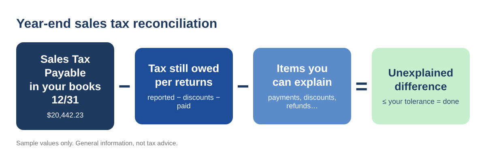
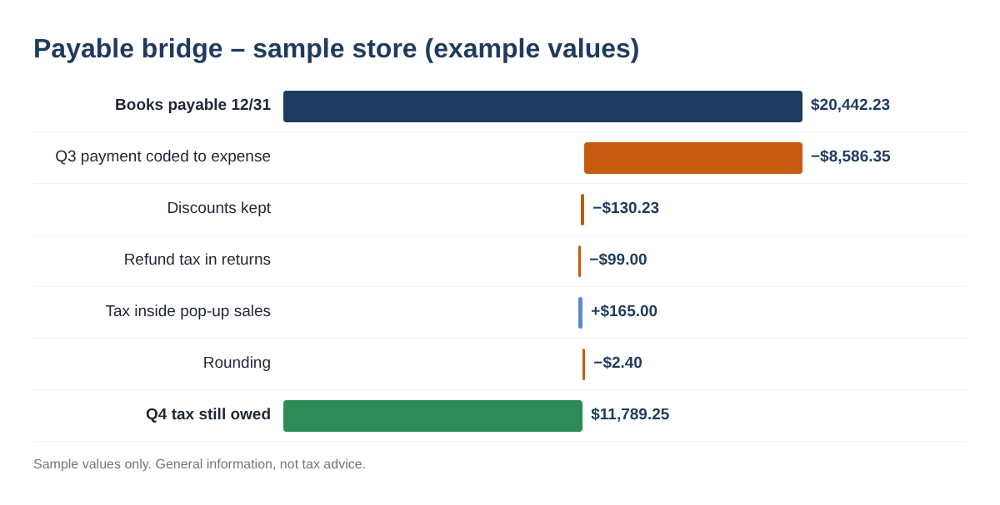
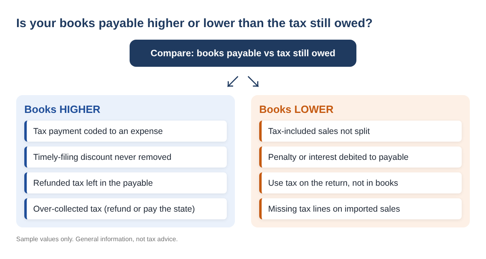

On December 31, 2026, the balance sheet of a small beauty supply store shows $20,442.23 in Sales Tax Payable. The only sales tax return still unpaid is the fourth quarter, which will report $11,789.25 when it is filed in January. That leaves $8,652.98 in a liability account that nobody can explain. The store is a sample business we made up for this post, but the pattern is real: it is common for a business that collects sales tax to end the year with a payable that drifts away from its returns, one small booking choice at a time.
This post walks through the year-end reconciliation that closes that gap: what the balance should equal, how to locate the quarter where it went wrong, how to turn each difference into a journal entry, and which three sales numbers to compare before you lock the year.
This post is general information, not tax or legal advice; sales tax rules differ by state, so confirm your own situation with your state agency or a licensed professional.
Sales tax you collect from customers is money you hold for the state. IRS Publication 334 lists state and local sales taxes imposed on the buyer among the items that are not income, and says you generally do not include them in income when you collect them and turn them over to the government. In your books that means the tax is credited to a liability, not to sales, and the liability goes down only when you pay the state.
So at year-end the account should hold one thing: tax for periods that are filed (or about to be filed) but not yet paid. For a quarterly filer that is usually the fourth-quarter return; for a monthly filer, December. Anything else in the balance is a reconciling item that needs a reason. Written as a formula:
Unexplained difference = Payable in books on 12/31 − prior-year tax still in it − (tax reported on 2026 returns − discounts taken − tax paid for 2026 periods) − items you can explain

Run two reports from your accounting software for January 1 through December 31, 2026: a sales summary by month (gross sales, nontaxable sales) and the Sales Tax Payable account detail (credits for tax collected, debits for payments). Then pull every 2026 sales tax return and payment confirmation. Build one row per month with these columns:
Use the same accounting basis your state return uses. If the return is prepared on cash receipts and your books are on accrual, the monthly numbers usually won't match and the gap is timing, not error. In Excel or Google Sheets, with books gross sales in column B and nontaxable sales in column C, taxable sales per books is =B2-C2. Add a check column for the effective rate per books, =E2/D2; a month far from your combined rate is the first place to look.
Monthly rows are too noisy for a quarterly filer, so sum them by quarter and compare to each return. With tax collected in column E and tax reported in column H, the first-quarter tax gap is =SUM(E2:E4)-SUM(H2:H4). Here is the sample store:
| Quarter | Taxable sales, books | Taxable sales, return | Tax, books | Tax, return | Tax gap |
|---|---|---|---|---|---|
| Q1 | $103,300.00 | $103,300.00 | $8,522.25 | $8,522.25 | $0.00 |
| Q2 | $107,701.00 | $107,800.00 | $8,992.50 | $8,893.50 | $99.00 |
| Q3 | $104,600.00 | $104,600.00 | $8,631.90 | $8,629.50 | $2.40 |
| Q4 | $143,065.00 | $142,900.00 | $11,624.25 | $11,789.25 | ($165.00) |
| Year | $458,666.00 | $458,600.00 | $37,770.90 | $37,834.50 | ($63.60) |
Read the gaps in pairs. In Q2 the books show $99.00 less taxable sales and $99.00 more tax than the return: a May refund of $1,200 in merchandise plus $99.00 of tax was booked entirely to Sales Returns, so the tax never left the payable while the return correctly deducted it. In Q4 the pattern reverses: $2,165 of holiday pop-up sales were recorded tax-included, so $165.00 of tax sits inside sales. Q3's $2.40 is register rounding. The year-level gap is only $63.60, yet the payable is off by $8,652.98, which tells you the larger problem is on the payment side, not in sales.
Compare the debits to Sales Tax Payable with the payments the state actually received. The sample store paid Q1 ($8,479.64) and Q2 ($8,849.03) through the payable, but its Q3 payment of $8,586.35 was coded to Taxes & Licenses expense. That single entry explains most of the gap and also overstates expenses by the same amount.
The second payment-side item is smaller and easy to miss. The store files in a state that allows a 0.5% discount for filing and paying on time (Texas, for example, allows a 0.5% timely filing discount and a separate 1.25% prepayment discount; many states allow nothing). The discounts on Q1 through Q3, $130.23 in total, reduced what the store paid, but no entry ever removed them from the payable.
| Line | Amount |
|---|---|
| Sales Tax Payable per books, 12/31/2026 | $20,442.23 |
| Tax reported on Q1–Q4 returns | $37,834.50 |
| Less discounts taken on Q1–Q3 returns | ($130.23) |
| Less tax paid in 2026 for Q1–Q3 | ($25,915.02) |
| Still owed per returns (Q4, due in January 2027) | $11,789.25 |
| Difference before items | $8,652.98 |
| Q3 payment coded to expense (books higher) | $8,586.35 |
| Timely-filing discounts left in the payable (books higher) | $130.23 |
| May refund tax booked to Sales Returns (books higher) | $99.00 |
| December tax-included pop-up sales (books lower) | ($165.00) |
| Unexplained difference | $2.40 |

To keep the signs straight in a spreadsheet, label each item "Books higher" or "Books lower" and let a formula apply the sign: with the amount in B2 and the label in C2, use =IF(C2="Books higher",B2,-B2), then subtract the total of that column from the difference before items.
| Item | Debit | Credit | Amount |
|---|---|---|---|
| Q3 payment coded to expense | Sales Tax Payable | Taxes & Licenses | $8,586.35 |
| Discounts kept | Sales Tax Payable | Other Income | $130.23 |
| Refund tax in Sales Returns | Sales Tax Payable | Sales Returns | $99.00 |
| Tax inside pop-up sales | Sales | Sales Tax Payable | $165.00 |
After these four entries the payable is $11,791.65: the Q4 tax plus $2.40 of rounding. Bookkeepers often clear a few dollars of rounding to a small expense or income account once they are sure it is rounding and not a missing transaction; set your own tolerance before you start, not after you see the result.
Three other items show up often and need more care than a quick entry:

The payable is only half of the picture. California's audit publication (CDTFA Publication 76) describes auditors comparing total sales in your books with the sales on your income tax returns and on your sales tax returns, and the tax you collected with the tax you reported. Those comparisons are worth doing yourself first:
IRS Publication 334 draws the line that matters for the second check: tax imposed on the buyer that you collect and pay over is generally kept out of gross receipts, while a tax imposed on you as the seller is included in gross receipts. Which kind your state imposes is a state-law question, so confirm it before you change how sales are reported.
If the difference is still outside your tolerance after the payment and sales checks, these situations are the usual cause:
Keep the reconciliation, the returns and the payment confirmations with the year's records. CDTFA, for example, says to keep required records for at least four years unless it authorizes earlier destruction, and longer while an audit is open; your state's period may differ.
You can download the ready-made Sales Tax Reconciliation Workbook 2026 for free in the Free kit download box below (Excel + PDF guide, no sign-up).
Disclaimer: This article is for general educational purposes only and is not tax, legal or accounting advice. Sales tax rules are set by each state and sometimes by local jurisdictions, and the right treatment depends on your facts. The sample business and all numbers in this post are invented examples. Before you file, amend or change how you record sales tax, confirm your situation with your state tax agency or a licensed tax professional.